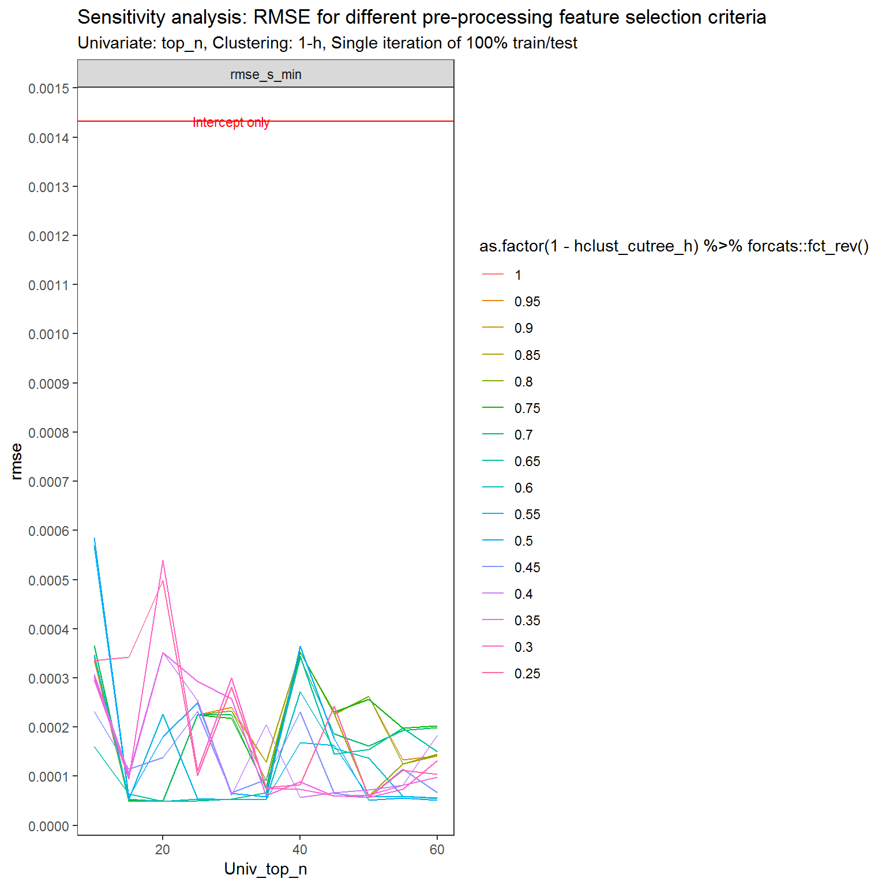
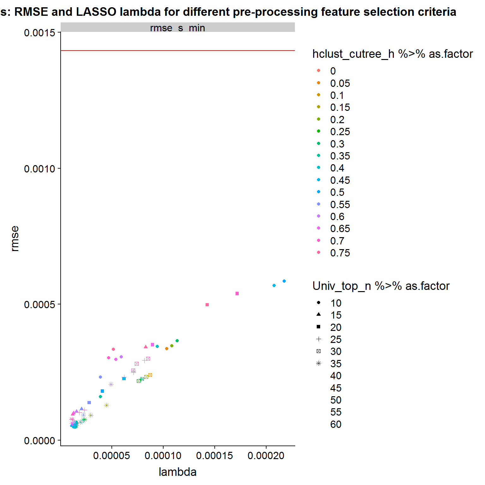
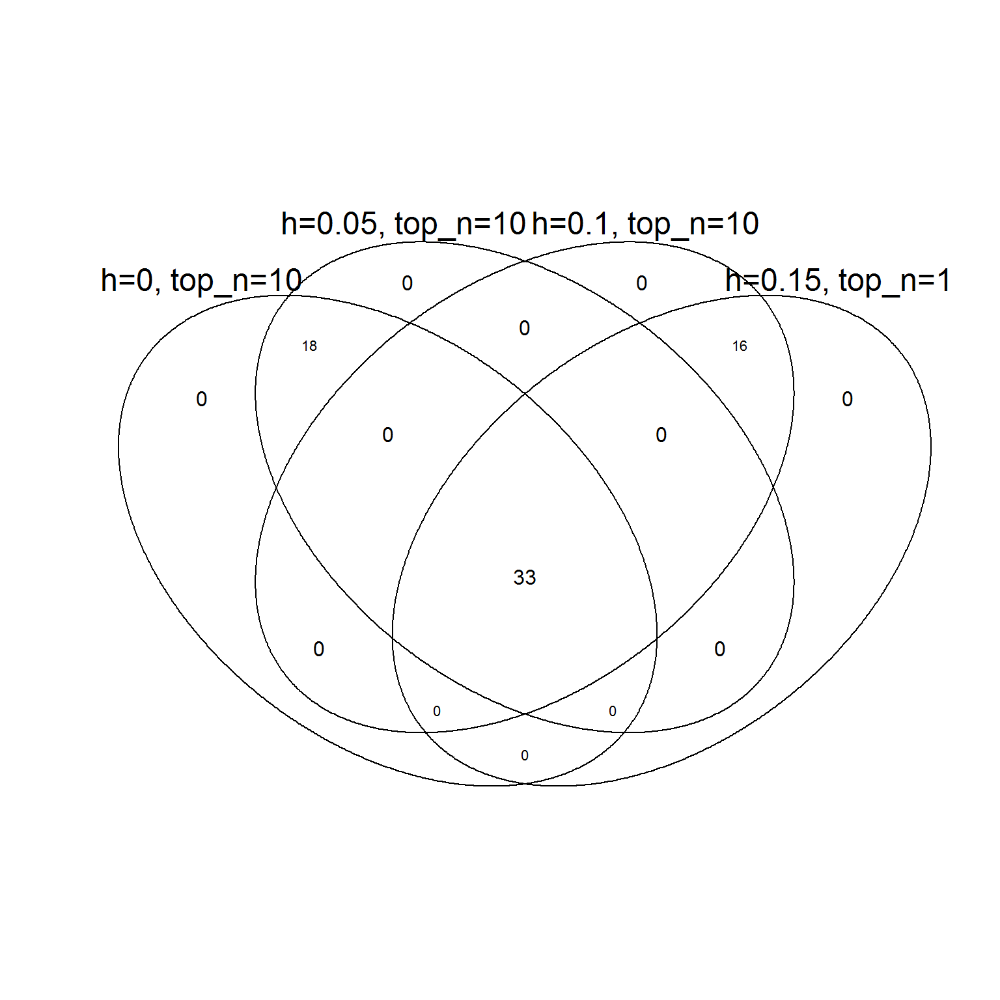
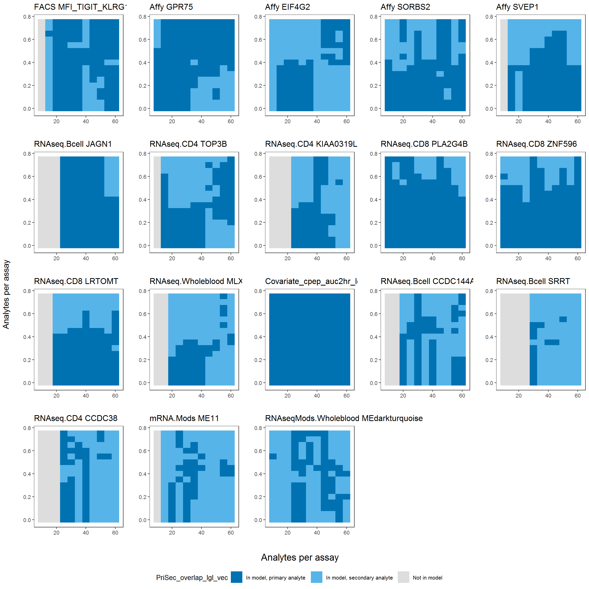
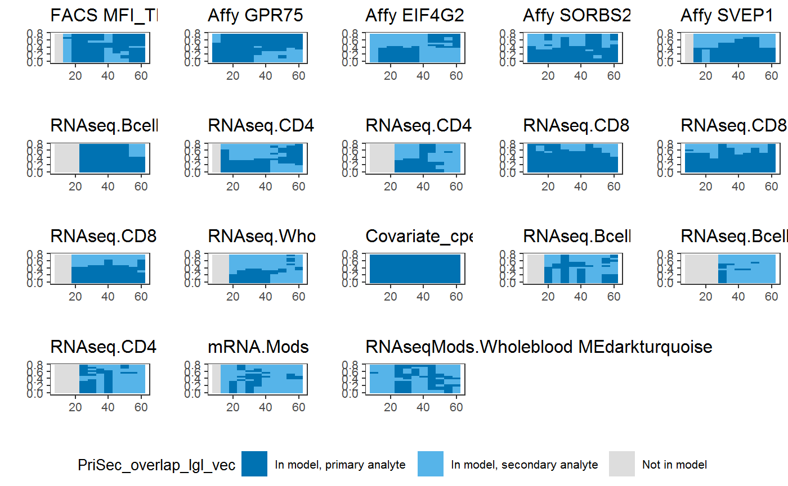
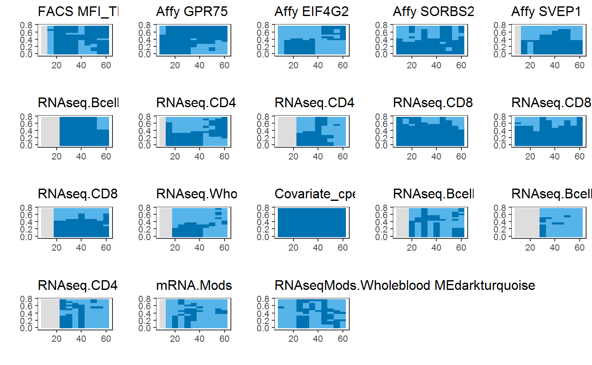

V_JDRF_2_benchmark_sensitivity.RmdBenchmarking on pre-processing parameters:
1. Univariate cuttof at each assay (top_n)
2. clustering minimum correlation (h)
## Supervised task: mlr.Data
## Type: regr
## Target: cpep_model_decayrate
## Observations: 31
## Features:
## numerics factors ordered functionals
## 76746 0 0 0
## Missings: TRUE
## Has weights: FALSE
## Has blocking: FALSE
## Has coordinates: FALSElrn.glmnet.1.orig<-makeLearner(cl= "regr.cvglmnet", par.vals = list(alpha=1, s='lambda.min') ) # s will be override, so value does not matter. if not specified, mlr will assign s=0.01
lrn_PreProcess_glmnet<-Fun_lrn_univ_Clusters_All_makePrep_MaG(lrn.glmnet.1.orig,
train_F = F_PreProc_3_UnivClust_Train_MaG,
Predict_F = F_PreProc13_BOTH_Predict_MaG,
param.Univ.filt.top.n.features = NA,
param.UnivClustRankTopN = NA,
param.cluster_method_KH = NA,
param.corrplot.n.clusters.k = NA,
param.corrplot.n.clusters.h = NA,
parame.gene.or.module = NA,
param.LASSO.n.features.arbitrary=NA)
Assay.Analyte.sep<-'.ZZZ.'
is.numeric(param.impute.knn.k<-20) ## [1] TRUEparam.assay.type.vec<-c('Short', 'Long', 'Short', 'Short', rep('Long', 11))
lrn_PreProcess_glmnet$par.vals[['param.assay.type.vec']]<-param.assay.type.vec
lrn_PreProcess_glmnet$next.learner$properties %<>% c(., 'missings') # ok to add only because
lrn_PreProcess_glmnet## Learner regr.cvglmnet.preproc from package glmnet
## Type: regr
## Name: ; Short name:
## Class: PreprocWrapper
## Properties: numerics,factors,missings,weights
## Predict-Type: response
## Hyperparameters: alpha=1,s=lambda.minparam.LASSO.n.features.arbitrary<-6
## Primary(Univ + cluster_rank=1)
## Secondary(univariate only, without clustering).
h_seq<-c(seq.int(0, 20, by=1)/20)[-c(17:21)]; top_h_sqe<-seq.int(10, 60, by = 5)
# h_seq<-c(0.1, 0.2, 0.25, 0.3, 0.35, 0.4, 0.5, 0.75); top_h_sqe<-c(5, 10, 20, 30, 40, 50)
# cs <- seq(0,0.75, 0.05); Ns <- seq(5, 60, 5)
# 1-h_seq
bmr_tib<-expand.grid(
hclust_cutree_h = h_seq,
Univ_top_n = top_h_sqe) %>% as_tibble
# bmr_tib %<>% add_row(hclust_cutree_h = 0.3, Univ_top_n = 30, .before = 1)
## 0. setup
bmr_tib %<>%
mutate(args_vec_i = map2(Univ_top_n, hclust_cutree_h, ~list(.x, 1, 'method.h', 0, .y, 'gene', param.LASSO.n.features.arbitrary)) ) %>%
mutate(lrd_ID_i = paste0('lrn_', 1:n())) %>%
mutate(lrn_i = map2(args_vec_i, lrd_ID_i, ~Func_update_args_univ_clusters(lrn = lrn_PreProcess_glmnet, args_vec = .x, lrn.id = .y)))#############################################################################
# bmr_tib_naive<-bmr_tib %>% mutate(whole_run = lrn_i %>% imap(~whole_run_function(task = task_j, lrn = .x, lambda_opt = 'pushed_lambda', .y)))
# save(bmr_tib_naive, file = 'data/bmr_tib_naive.rdata')
#############################################################################
# load(file = 'Z:/R_rhino/JDRFCAV/data/bmr_tib_naive.rdata') #
bmr_tib_naive## # A tibble: 176 x 6
## hclust_cutree_h Univ_top_n args_vec_i lrd_ID_i lrn_i whole_run
## <dbl> <dbl> <list> <chr> <list> <list>
## 1 0 10 <list [7]> lrn_1 <S3: PreprocWr~ <list [7~
## 2 0.05 10 <list [7]> lrn_2 <S3: PreprocWr~ <list [7~
## 3 0.1 10 <list [7]> lrn_3 <S3: PreprocWr~ <list [7~
## 4 0.15 10 <list [7]> lrn_4 <S3: PreprocWr~ <list [7~
## 5 0.2 10 <list [7]> lrn_5 <S3: PreprocWr~ <list [7~
## 6 0.25 10 <list [7]> lrn_6 <S3: PreprocWr~ <list [7~
## 7 0.3 10 <list [7]> lrn_7 <S3: PreprocWr~ <list [7~
## 8 0.35 10 <list [7]> lrn_8 <S3: PreprocWr~ <list [7~
## 9 0.4 10 <list [7]> lrn_9 <S3: PreprocWr~ <list [7~
## 10 0.45 10 <list [7]> lrn_10 <S3: PreprocWr~ <list [7~
## # ... with 166 more rowsTargetName<-task_j %>% getTaskTargetNames
bmr_tib_naive_res<-bmr_tib_naive %>%
mutate(fit_baked = whole_run %>% map('fit_baked')) %>%
mutate(s = whole_run %>% map('alt_lambda_list')) %>%
mutate(Baked_x = whole_run %>% map('Baked_x')) %>%
mutate(Baked_y = whole_run %>% map('Baked_y')) %>%
mutate(UnivOnlyCoef = whole_run %>% map('UnivOnlyCoef')) %>%
mutate(s_lambda.min = s %>% map_dbl('lambda.min')) %>%
mutate(coef_s_min = map2(fit_baked, s_lambda.min, ~coef(.x, s = .y) %>% tidy)) %>%
mutate(predict_s_min = pmap(list(fit_baked, Baked_x, s_lambda.min), function(x,y,z)
# x= bmr_tib_naive_res$fit_baked[[1]]; y=bmr_tib_naive_res$Baked_x; z=bmr_tib_naive_res$s_lambda.min
predict(object = x, newx = y, s = z) %>% data.frame %>% pull(X1) )) %>%
mutate(rmse_s_min = map2_dbl(predict_s_min, Baked_y, ~sqrt(mean((.x - .y) ^ 2)))) %>%
mutate(n_coef_s_min = coef_s_min %>% map_int(~nrow(.x)))
# bmr_tib_naive_res %>% filter(hclust_cutree_h == 0.3, Univ_top_n == 30) %>% t
# bmr_tib_naive_res$n_coef_s_min
# bmr_tib_naive_res$n_coef_s_1se
# bmr_tib_naive_res$n_coef_s_pushedDF_rmse<-bmr_tib_naive_res %>%
select(hclust_cutree_h, Univ_top_n, rmse_s_min) %>%
# select(hclust_cutree_h, Univ_top_n, rmse_s_min, rmse_s_1se, rmse_s_pushed) %>% gather('s_opt','rmse',3)
gather('s_opt','rmse', 3)
## featureless / intercept only
y<-task_j %>% getTaskTargets
y_mean<-y %>% mean
rmse_null<-sqrt(mean((y - y_mean) ^ 2))
DF_rmse %>% filter(hclust_cutree_h == param.corrplot.n.clusters.h, Univ_top_n == param.Univ.filt.top.n.features) ## # A tibble: 1 x 4
## hclust_cutree_h Univ_top_n s_opt rmse
## <dbl> <dbl> <chr> <dbl>
## 1 0.3 30 rmse_s_min 0.000225 # filter(s_opt %in% c('rmse_s_1se','rmse_s_pushed')) %>%
# filter(hclust_cutree_h %in% c(0.75)) %>%
DF_rmse %>%
# filter(hclust_cutree_h == param.corrplot.n.clusters.h) %>%
ggplot() +
geom_line(aes(x = Univ_top_n, y = rmse, color = as.factor(1-hclust_cutree_h) %>% forcats::fct_rev() )) + geom_hline(yintercept = rmse_null, colour = "red") +
facet_grid(.~s_opt) +
annotate("text", label = "Intercept only", x = 30, y = rmse_null, size = 3, colour = "red")+
scale_y_continuous(breaks = pretty(c(rmse_null, DF_rmse$rmse), n = 10)) +
theme_bw() + theme(panel.grid.major = element_blank(), panel.grid.minor = element_blank()) +
labs(title = 'Sensitivity analysis: RMSE for different pre-processing feature selection criteria',
subtitle = 'Univariate: top_n, Clustering: 1-h, Single iteration of 100% train/test')
DF_s_lambda<-bmr_tib_naive_res %>%
select(hclust_cutree_h, Univ_top_n,
# s_lambda.min, s_lambda.1se, s_lambda.pushed) %>% gather('s_opt','lambda',3:5) %>%
s_lambda.min) %>% gather('s_opt','lambda',3) %>%
select(lambda)
DF_rmse_s_lambda<-cbind(DF_rmse, DF_s_lambda) %>% as_data_frame ## Warning: `as_data_frame()` is deprecated, use `as_tibble()` (but mind the new semantics).
## This warning is displayed once per session.ggplot(DF_rmse_s_lambda) +
geom_point(aes(x = lambda, y = rmse, col = hclust_cutree_h %>% as.factor, shape = Univ_top_n %>% as.factor)) +
geom_hline(yintercept = rmse_null, colour = "red") +
facet_wrap(s_opt ~.) +
labs(title = 'Sensitivity analysis: RMSE and LASSO lambda for different pre-processing feature selection criteria')## Warning: The shape palette can deal with a maximum of 6 discrete values
## because more than 6 becomes difficult to discriminate; you have
## 11. Consider specifying shapes manually if you must have them.## Warning: Removed 80 rows containing missing values (geom_point).
bmr_tib_naive_res$coef_s_min %>% setNames(str_c('h=', bmr_tib_naive_res$hclust_cutree_h, ', top_n=', bmr_tib_naive_res$Univ_top_n)) %>%
.[1:4] %>%
gplots::venn()
bmr_all_comb<-bmr_tib_naive_res %>%
select(hclust_cutree_h, Univ_top_n, coef_s_min, UnivOnlyCoef) %>%
rename(secondary_analytes = UnivOnlyCoef) %>%
mutate(primary_analytes = coef_s_min %>% map(~.x$row[-1])) %>%
mutate(check_overlap = map2_lgl(primary_analytes, secondary_analytes, ~all(.x %in% .y))) ## Note!: primary may include covariates, which secondary (univ only) will NOT! check if affect results!!
# bmr_all_comb$primary_analytes[[1]] %in% bmr_all_comb$secondary_analytes[[1]]
# bmr_all_comb_dim<-bmr_all_comb %>% select(hclust_cutree_h, Univ_top_n) %>% table %>% dim
GS_comb<-bmr_all_comb %>%
filter(hclust_cutree_h == param.corrplot.n.clusters.h, Univ_top_n == param.Univ.filt.top.n.features) %>% select(secondary_analytes, primary_analytes) %>% map(unlist)
# REF: bmr_all_comb
GS_comb_primary_tib<-data.frame(GS_Primary_analyte = GS_comb$primary_analytes, stringsAsFactors = FALSE) %>% as_data_frame
GS_comb_primary_tib %<>%
mutate(bmr_all_comb_overlap_matrix_YN = GS_Primary_analyte %>% map(~{
# .x = GS_comb_primary_tib$GS_Primary_analyte[[2]]
# .x %in% bmr_all_comb$primary_analytes[[40]]
bmr_all_comb %<>%
## Primary
# .x %in% bmr_all_comb$secondary_analytes[[3]] %>% head
# sec_list<-bmr_all_comb %>% pull(secondary_analytes)
# sec_list %>% map(function(sec) .x %in% sec) %>% unlist
mutate(primary_overlap_lgl_vec = primary_analytes %>%
map_lgl(function(primary_comb_i) .x %in% primary_comb_i) %>%
setNames(bmr_all_comb %>% unite('h_topN', c('hclust_cutree_h','Univ_top_n')) %>%
pull(h_topN) )) %>%
## Secondary
mutate(secondary_overlap_lgl_vec = secondary_analytes %>%
map_lgl(function(secondary_comb_i) .x %in% secondary_comb_i) %>%
setNames(bmr_all_comb %>% unite('h_topN', c('hclust_cutree_h', 'Univ_top_n')) %>%
pull(h_topN) )) %>%
## Primary + Secondary (primary over secondary via any() )
mutate(PriSec_overlap_lgl_vec = map2_chr(primary_overlap_lgl_vec, secondary_overlap_lgl_vec,
~ifelse(.y, ifelse(.x, 'In model, primary analyte', 'In model, secondary analyte'),
'Not in model' )))
# end internal DF matrix for all {h,top_n} combinations
}))
# bmr_all_comb$primary_overlap_lgl_vec %>% table
## Nested tibble with TRUE/FALSE values for (vector) overlap
# GS_comb_primary_tib$bmr_all_comb_overlap_matrix_YN[[1]] %>% select(primary_overlap_lgl_vec, secondary_overlap_lgl_vec, PriSec_overlap_lgl_vec) %>% data.frame
# GS_comb_primary_tib %<>% mutate(overlap_matrix_YN = bmr_all_comb_overlap_matrix_YN %>% map(~.x$primary_overlap_lgl_vec %>% matrix(bmr_all_comb_dim) %>% data.frame %>% set_rownames(bmr_all_comb$hclust_cutree_h %>% unique) %>% set_colnames(bmr_all_comb$Univ_top_n %>% unique))) # GS_comb_primary_tib$overlap_matrix_YN[[1]]
## coariates were forced to be at all models be definition. they are not part of the pre-processing, therefore added be force
GS_comb_primary_tib[GS_comb_primary_tib$GS_Primary_analyte=='Covariate_cpep_auc2hr_log_baseline','bmr_all_comb_overlap_matrix_YN'][[1]][[1]]$PriSec_overlap_lgl_vec<-rep('In model, primary analyte', nrow(bmr_all_comb) )
## Rename analytes
# !!! FOR VISUALIZATION ONLY. NOT RELEVANT IF OTHER ANALYTES ARE SELECTED, OR IN DIFFERENT ORDER !!!
GS_comb_primary_tib$GS_Primary_analyte %<>% str_replace('.ZZZ.',' ')
GS_comb_primary_tib$GS_Primary_analyte[2:5]<-paste('Affy', c('GPR75','EIF4G2','SORBS2','SVEP1'), sep=' ')
# library(RColorBrewer)
myColors <- c("#DDDDDD", "#56B4E9", "#0072B2")
names(myColors) <- c("Not in model", "In model, secondary analyte", "In model, primary analyte")
#names(myColors) <- c("TRUE", "FALSE", "NA")
GS_comb_primary_tib %<>%
mutate(overlap_matrix_ggplot = map2(bmr_all_comb_overlap_matrix_YN, GS_Primary_analyte, ~
# .x = GS_comb_primary_tib$bmr_all_comb_overlap_matrix_YN[[15]]; .y = GS_comb_primary_tib$GS_Primary_analyte[[15]]
# DF<-.x %>% select(hclust_cutree_h, Univ_top_n, PriSec_overlap_lgl_vec)
#DF$hclust_cutree_h %>% table; DF$Univ_top_n %>% table
.x %>%
#select(hclust_cutree_h, Univ_top_n, PriSec_overlap_lgl_vec) %>%
ggplot() + geom_tile(aes(x = Univ_top_n, y = hclust_cutree_h, fill = PriSec_overlap_lgl_vec)) +
scale_fill_manual(values = myColors) +
# labs(x = "Analytes per assay", y = "Min correlation in cluster", title = .y) +
labs(x = "", y = "", title = .y) +
# scale_y_reverse() +
theme(legend.position = "none", text = element_text(size=12),
plot.title = element_text(size = 12)) +
theme_bw(base_size = 10) + theme(panel.grid.major = element_blank(),
panel.grid.minor = element_blank())
))
# GS_comb_primary_tib$overlap_matrix_ggplot[[15]] # MLXIP
## remove some analytes from plot
Exclude_analytes<-c(6, 8, 11, 16, 17)
GS_comb_primary_tib_ordered<-GS_comb_primary_tib[c(c(1:18)[-Exclude_analytes], Exclude_analytes),]
common_legend<-get_legend(GS_comb_primary_tib_ordered$overlap_matrix_ggplot[[1]] + theme(legend.position = "bottom"))
# plot_grid(NULL, common_legend, ncol=1)
Grid<-plot_grid(plotlist = GS_comb_primary_tib_ordered$overlap_matrix_ggplot %>% map(~.x + theme(legend.position='none')))
Grid_xlab<-ggdraw(add_sub(Grid, "Analytes per assay"))
#Grid_yx_shared<-ggdraw(add_sub(Grid_y_shared, "Min correlation in cluster"))
# Grid_no_axes_shared_legend<-plot_grid(Grid, common_legend, ncol = 1, rel_heights = c(1,.2))
ggpubr::annotate_figure(Grid_xlab, left = 'Analytes per assay', bottom = common_legend)
## R version 3.5.0 (2018-04-23)
## Platform: x86_64-w64-mingw32/x64 (64-bit)
## Running under: Windows 10 x64 (build 14393)
##
## Matrix products: default
##
## locale:
## [1] LC_COLLATE=English_United States.1252
## [2] LC_CTYPE=English_United States.1252
## [3] LC_MONETARY=English_United States.1252
## [4] LC_NUMERIC=C
## [5] LC_TIME=English_United States.1252
##
## attached base packages:
## [1] stats graphics grDevices utils datasets methods base
##
## other attached packages:
## [1] bindrcpp_0.2.2 knitr_1.21 JDRFCAV_0.1.0
## [4] impute_1.54.0 limma_3.36.1 biobroom_1.12.0
## [7] broom_0.5.0 glmnet_2.0-16 foreach_1.4.4
## [10] Matrix_1.2-14 mlrCPO_0.3.4 mlr_2.13.9000
## [13] ParamHelpers_1.12 cowplot_0.9.3 ggplot2_3.1.0
## [16] tibble_2.0.1 tidyr_0.8.2 stringr_1.3.1
## [19] purrr_0.2.5 magrittr_1.5 dplyr_0.7.8
##
## loaded via a namespace (and not attached):
## [1] Biobase_2.40.0 splines_3.5.0 gtools_3.8.1
## [4] assertthat_0.2.0 yaml_2.2.0 pillar_1.3.1
## [7] backports_1.1.3 lattice_0.20-35 glue_1.3.0
## [10] digest_0.6.18 checkmate_1.9.1 colorspace_1.4-0
## [13] htmltools_0.3.6 plyr_1.8.4 XML_3.98-1.16
## [16] pkgconfig_2.0.2 scales_1.0.0 gdata_2.18.0
## [19] parallelMap_1.4 ggpubr_0.1.7 withr_2.1.2
## [22] BiocGenerics_0.26.0 lazyeval_0.2.1 cli_1.0.1
## [25] survival_2.41-3 crayon_1.3.4 memoise_1.1.0
## [28] evaluate_0.12 fs_1.2.3 fansi_0.4.0
## [31] nlme_3.1-137 MASS_7.3-49 gplots_3.0.1
## [34] forcats_0.3.0 xml2_1.2.0 tools_3.5.0
## [37] data.table_1.12.0 BBmisc_1.11 munsell_0.5.0
## [40] compiler_3.5.0 pkgdown_1.3.0 caTools_1.17.1.1
## [43] rlang_0.3.1 grid_3.5.0 iterators_1.0.10
## [46] rstudioapi_0.7 bitops_1.0-6 labeling_0.3
## [49] rmarkdown_1.11 gtable_0.2.0 codetools_0.2-15
## [52] roxygen2_6.1.1 reshape2_1.4.3 R6_2.3.0
## [55] gridExtra_2.3 utf8_1.1.4 bindr_0.1.1
## [58] fastmatch_1.1-0 commonmark_1.5 rprojroot_1.3-2
## [61] KernSmooth_2.23-15 desc_1.2.0 stringi_1.2.4
## [64] parallel_3.5.0 Rcpp_1.0.0 tidyselect_0.2.5
## [67] xfun_0.4bmr_tib_naive_res<-bmr_tib_naive %>%
# s_lambda.1se
mutate(s_lambda.1se = s %>% map_dbl('lambda.1se')) %>%
mutate(coef_s_1se = map2(fit_baked, s_lambda.1se, ~coef(.x, s = .y) %>% tidy)) %>%
mutate(predict_s_1se = pmap(list(fit_baked, Baked_x, s_lambda.1se), function(x,y,z)
predict(object = x, newx = y, s = z) %>% data.frame %>% pull(X1) )) %>%
mutate(rmse_s_1se = map2_dbl(predict_s_1se, Baked_y, ~sqrt(mean((.x - .y) ^ 2)))) %>%
mutate(n_coef_s_1se = coef_s_1se %>% map_int(~nrow(.x))) %>%
# s_lambda.pushed
mutate(s_lambda.pushed = s %>% map_dbl('pushed_lambda')) %>%
mutate(coef_s_pushed = map2(fit_baked, s_lambda.pushed, ~coef(.x, s = .y) %>% tidy)) %>%
mutate(predict_s_pushed = pmap(list(fit_baked, Baked_x, s_lambda.pushed), function(x,y,z)
predict(object = x, newx = y, s = z) %>% data.frame %>% pull(X1) )) %>%
mutate(rmse_s_pushed = map2_dbl(predict_s_pushed, Baked_y, ~sqrt(mean((.x - .y) ^ 2)))) %>%
mutate(n_coef_s_pushed = coef_s_pushed %>% map_int(~nrow(.x))) # benchmark's default require some additional nested resampling. here will force test to be the same 100% train
## test = 100% train
Task_j_N<-task_j %>% getTaskSize
Holdout_single_pair_AA<-makeFixedHoldoutInstance(train.inds = 1:Task_j_N, test.inds = 1:Task_j_N, size = Task_j_N)
Holdout_single_pair_AA$desc$predict = 'both'
## prediction by default is done here with the learner's original s
bmr<-benchmark(bmr_tib$lrn_i, task_j, resamplings = Holdout_single_pair_AA, measures = list(rmse))## -- Attaching packages --------------------------------------------------------------------- tidyverse 1.2.1 --## v readr 1.1.1 v forcats 0.3.0## -- Conflicts ------------------------------------------------------------------------ tidyverse_conflicts() --
## x foreach::accumulate() masks purrr::accumulate()
## x Matrix::expand() masks tidyr::expand()
## x tidyr::extract() masks magrittr::extract()
## x dplyr::filter() masks stats::filter()
## x cowplot::ggsave() masks ggplot2::ggsave()
## x dplyr::lag() masks stats::lag()
## x purrr::set_names() masks magrittr::set_names()
## x foreach::when() masks purrr::when()library(cowplot)
df <- data.frame(
x = rep(c(2, 5, 7, 9, 12), 2),
y = rep(c(1, 2), each = 5),
z = factor(rep(1:5, each = 2)),
w = rep(diff(c(0, 4, 6, 8, 10, 14)), 2)
)
myColors <- c("#DDDDDD", "#56B4E9", "#0072B2", "#56E4E9", "#0172B2")
gg_master<-df %>% ggplot() + geom_tile(aes(x = x, y = y, fill = z)) +
scale_fill_manual(values = myColors) +
labs(x = "Analytes per assay", y = "Min correlation in cluster") +
# scale_y_reverse() +
theme(legend.position = "none", text = element_text(size=12), plot.title = element_text(size = 12)) +
theme_bw(base_size = 10) + theme(panel.grid.major = element_blank(), panel.grid.minor = element_blank())
gg_1<-gg_master + labs(title = 'g1')
gg_2<-gg_master + labs(title = 'g2')
gg_3<-gg_master + labs(title = 'g3')
gg_4<-gg_master + labs(title = 'g4')
gg_5<-gg_master + labs(title = 'g5')
common_legend<-get_legend(GS_comb_primary_tib_ordered$overlap_matrix_ggplot[[1]] + theme(legend.position = "bottom"))
pg<-plot_grid(plotlist = GS_comb_primary_tib_ordered$overlap_matrix_ggplot %>% map(~.x + theme(legend.position='none')))
plot_grid(pg, common_legend, ncol = 1, rel_heights = c(1,.1))
